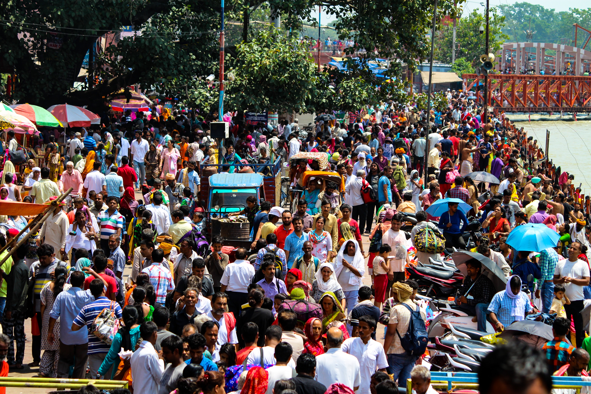
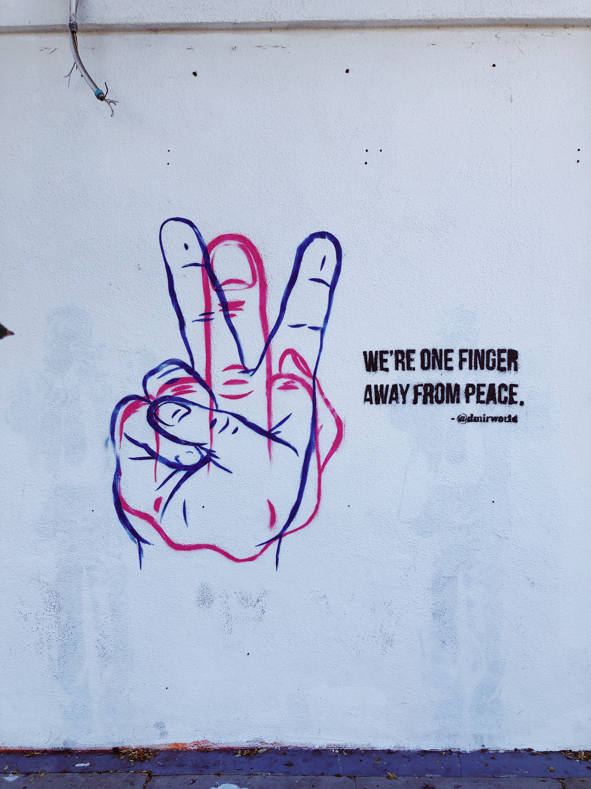

Hi, I know that you are thinking what will we impart in our brains after reading about Elections. Yeah, I know that it's a boring topic but to understand how India works, you must understand it's elections mechanism.

It's not a joke to conduct election in a country with over 1.3 billion citizens and the process
is very exhausting not just financially but also mentally.
It's not easy for the voters to decide between plethora of candidates.
But every political party uses everything that is possible to lure voters. Rallies and promises
work but we must not forget about the machinery that works behind the scenes.
Every political party has it's own dedicated machinery, whose reach among the masses depend on the
financial resources provided to them. There work is to spread party propaganda, among the grass root
level of the society. When that doesn't work, you can influence the media.
 Government accounts for around 25% advetisement revenue of news channels. And i'm warning the media to work as our leader says otherwise government has enough money and muscle power to push you all to poverty. Yeah, they can ban your channels(like they did with NDTV). That's for the ruling paty but what they all do is to hire individual companies which can analyse the population and suggest some measures to their clients. That's what Cambrige Analytica did. But for doing all this, you need money. Where will that come from? Yup, make friends with the corporate. You can't let them lose their temper, who knows what will happen if they stop their donations. But what about the grass root level? That is done by horse trading. You all just know what I mean! I know it's a huge task and that's why kudos to the parties. And that's how you win an election!